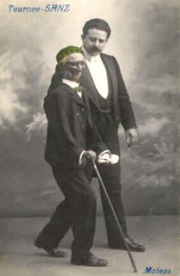
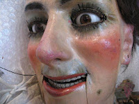
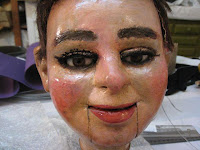
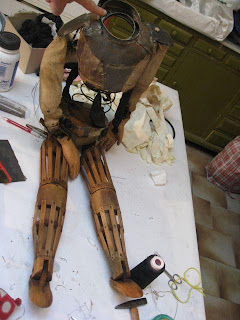
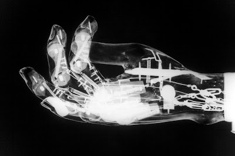

Francisco Sanz
2/9/2010
{kind=link}

{kind=link}

{kind=link}

{kind=link}

From Marcelo Mellison
There was a famous ventriloquist in Spain about one hundred years ago, his name was Francisco Sanz. I know about him because he visited my country, Argentina, to perform in variety theatres, and I saw programs and newspaper articles from those days. Anyway, last year his family donated some of his paper mache figures to a puppet museum in Catalunya, Spain. Since they were stored for about a century (imagine that!) the figures needed some restoration.
You will see that the heads are not very different from what we have today, but... did you ever see a body like that? Since his figures were standing and walking figures, I can understand that the knees have no movement; but what about the steel spring coil joining the upper torso to the hip section? I never saw anything like that! I guess that spring could give a very realistic movement to the body, the shoulder section could move forwards, backwards, up and down, to one side and the other... Wow! And while they were restoring the figures, they took X rays of one of the hands... Can you believe these mechanisms? For a HAND? For a figure made about one hundred years ago? Amazing.
